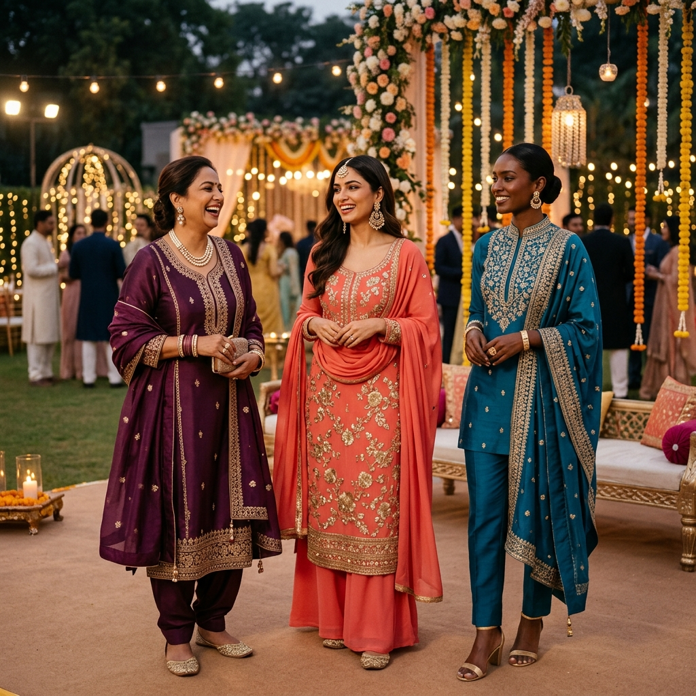

Last updated: July 17, 2026
Wedding Guest Outfit Colours by Skin Tone: The Indian Guide (Ethnic, Indo-Western & More)
Quick answer: As a wedding guest, your goal is to look your absolute best without upstaging the bride. The formula: pick a jewel tone or rich mid-tone suited to your skin's undertone, avoid ivory/white/red (bride territory), and choose a shade 1–2 steps bolder than you'd wear on a regular occasion — wedding lighting demands it.

Why Wedding Guest Colour Choices Are Uniquely Difficult
You're not dressing for the street or the office. Wedding guest dressing in India has a specific challenge set:
- You're being photographed — often under mixed tungsten and flash lighting that flattens certain colours
- You're around other dressed-up guests — your colour needs to hold its own in a crowd
- Unspoken rules exist — avoid ivory, cream, white, and deep red (traditionally reserved for the bride in many communities)
- Daytime vs. evening functions need different colour strategies — the morning mehendi doesn't call for the same palette as the evening reception
This guide solves all four.
The Non-Negotiable Rules First
Before the skin-tone charts, three colours to avoid as a guest:
1. White / Ivory / Cream — In most Indian communities, this is bridal territory. Even a cream palazzo set can cause awkwardness.
2. Deep Bridal Red — Pure crimson red reads as bridal in Hindu weddings. You can absolutely wear red — but choose a darker wine, a cooler berry-red, or a multi-coloured print with red.
3. All-Black head-to-toe — Black is increasingly accepted at urban Indian weddings, but in many families it still carries mourning associations. If you choose black, add gold jewellery and a colourful dupatta.
Colour Guide by Skin Tone and Undertone
Fair Skin — Warm Undertones
Function: Daytime (Mehendi, Haldi, Morning ceremony)
| Garment | Best Colours | Avoid |
|---|---|---|
| Salwar Kameez | Peach, butter yellow, warm mint, blush pink | Icy blue, stark white |
| Anarkali | Warm terracotta, coral, sage green | Lavender, cool grey |
| Indo-Western Set | Soft gold, rose gold tones, ivory-adjacent cream | Pure white |
| Palazzo Suit | Warm olive, marigold, soft coral | Neon shades |
Function: Evening (Reception, Dinner)
| Garment | Best Colours | Avoid |
|---|---|---|
| Salwar Kameez | Burgundy, rose gold, warm champagne, deep coral | All-white |
| Anarkali | Deep coral, wine, warm bronze | Icy pastels |
| Indo-Western Set | Rose gold, antique gold, warm dusty rose | Cool metallics |
Fair Skin — Cool Undertones
Function: Daytime
| Garment | Best Colours | Avoid |
|---|---|---|
| Salwar Kameez | Powder blue, lilac, soft mint, baby pink | Warm orange, mustard |
| Anarkali | Periwinkle, soft lavender, icy rose | Terracotta, earthy tones |
| Indo-Western Set | Pale sage, dusty blue, icy champagne | Warm golds |
| Palazzo Suit | Soft teal, cool mauve, silver-grey | Warm beige |
Function: Evening
| Garment | Best Colours | Avoid |
|---|---|---|
| Salwar Kameez | Royal blue, deep plum, sapphire, berry | Warm reds, orange |
| Anarkali | Deep cobalt, amethyst purple, jewel teal | Terracotta |
| Indo-Western Set | Silver, icy champagne, charcoal with cool tones | Warm gold |
Wheatish / Medium Skin — Warm Undertones
This is the most versatile skin-tone category for Indian weddings. Jewel tones look incredible, and you have the widest range of options.
Function: Daytime
| Garment | Best Colours | Avoid |
|---|---|---|
| Salwar Kameez | Mustard yellow, warm turquoise, coral, olive green | Very pale pastels |
| Anarkali | Burnt orange, deep teal, warm gold | Lavender, icy shades |
| Indo-Western Set | Warm copper, olive, terracotta | Cool silver tones |
| Palazzo Suit | Marigold, rust, rich coral | Muted cool tones |
Function: Evening
| Garment | Best Colours | Avoid |
|---|---|---|
| Salwar Kameez | Maroon, deep mustard, forest green, warm teal | Icy blue, cool pastels |
| Anarkali | Emerald green, deep coral, antique gold | Muted or greyed tones |
| Indo-Western Set | Deep gold, rich copper, jewel green |
Wheatish / Medium Skin — Cool Undertones
Function: Daytime
| Garment | Best Colours | Avoid |
|---|---|---|
| Salwar Kameez | Teal, cool mint, dusty rose, steel blue | Orange, warm yellows |
| Anarkali | Emerald, cool coral, berry pink | Earthy ochres |
| Indo-Western Set | Slate blue, mauve, cool sage | Warm copper tones |
Function: Evening
| Garment | Best Colours | Avoid |
|---|---|---|
| Salwar Kameez | Royal blue, deep plum, crimson, deep teal | Warm amber, terracotta |
| Anarkali | Sapphire, deep violet, rich fuchsia | Warm earthy tones |
| Indo-Western Set | Silver, cool champagne, cobalt | Warm gold metallics |
Dusky / Deep Skin Tones
Deep skin tones command attention in saturated, rich shades. The golden rule: go bold, go saturated, avoid muted.
Function: Daytime
| Garment | Best Colours | Avoid |
|---|---|---|
| Salwar Kameez | Bright turquoise, fuchsia, marigold, cobalt | Pale pastels, washed tones |
| Anarkali | Electric blue, vibrant emerald, hot pink | Muted beige, ash grey |
| Indo-Western Set | Gold, deep coral, bold teal | Very light neutrals |
| Palazzo Suit | Saffron, bright indigo, bold peacock | Washed-out or greyed shades |
Function: Evening
| Garment | Best Colours | Avoid |
|---|---|---|
| Salwar Kameez | Deep jewel tones — amethyst, emerald, cobalt | Dusty or muted versions |
| Anarkali | Bold magenta, deep teal, bright gold | Ivory, cream |
| Indo-Western Set | Rich gold metallic, deep bronze, electric blue |
Day vs. Evening: The Key Differences
| Daytime Wedding Function | Evening Reception/Dinner | |
|---|---|---|
| Colour approach | Softer, mid-toned, fresh | Deeper, richer, more saturated |
| Fabric | Georgette, cotton, linen-blend | Silk, brocade, heavy georgette |
| Metallic jewellery | Gold-tone or statement earrings | More layering — necklace + jhumkas |
| Colour that photographs well | Clear mid-tones in natural light | Rich jewel tones under artificial light |
| What to avoid | Heavy velvets, overly formal gowns | Washed-out pastels that disappear in low light |
Colours That Photograph Badly Under Indian Wedding Lighting
Indian weddings typically use a combination of warm tungsten uplighting, coloured spotlights, and flash photography. Some colours behave unpredictably:
| Colour | What Happens Under Wedding Lights |
|---|---|
| Neon yellow / lime | Goes aggressively bright under flash — overwhelms your face |
| Baby pink / blush | Gets washed out under warm golden uplights, looks almost white |
| Light grey | Looks dull and flat under most Indian wedding lighting rigs |
| Off-white / champagne | Reads as bridal on camera — avoid as a guest |
| Deep navy without sheen | Can look flat/dark in photographs — add embroidery or metallic details |
| Bright orange | Under warm uplights, can look like you're glowing orange |
Best performers under wedding lights: Emerald green, royal blue, deep plum, maroon, rich fuchsia, teal, and jewel gold. All of these hold their colour under mixed lighting and flash.
Garment-Specific Tips
Salwar Kameez: Choose the colour for the kameez, then pick a dupatta that contrasts it by 2–3 colour steps. The dupatta is your secret weapon for elegance.
Anarkali: Floor-length silhouettes absorb more light — go 1 shade bolder than you think you need. A colour that looks dramatic in your hand often looks perfect in photographs.
Indo-Western Sets: Crop-top-and-skirt or cape sets in solid colours with metallic embroidery photograph beautifully. Avoid all-over prints — they can look chaotic in group photos.
Palazzo Suits: The wide-leg silhouette creates a bold, modern look. Let the colour of the top do the talking — choose a statement colour for the kurta/blouse and a neutral or matching bottom.
Frequently Asked Questions
Q: Can I wear black to an Indian wedding?
Yes — especially in urban settings. Pair it with colourful accessories and a bright dupatta to keep the look festive rather than formal.
Q: I don't know my undertone — what's the safest wedding guest colour?
Emerald green or royal blue. Both are universally flattering across nearly all Indian skin tones and read beautifully in photographs.
Q: Can I match with my partner/spouse?
Yes, but coordinate rather than match exactly. If they wear navy blue, you wear a complementary teal or deep plum — not the same navy.
Q: Is it okay to wear a bright colour to the mehendi?
Absolutely — mehendi functions are the most colour-celebratory event. Go bold with jewel tones or festival-bright shades.
Q: What about dusky skin at a daytime wedding? Won't I stand out too much in bright colours?
That's the point — you should look gorgeous. Dusky skin in vibrant colours is one of the most striking combinations in Indian fashion. Don't downplay it.
Find Your Exact Wedding Guest Palette
General skin-tone categories are a starting point. Your exact undertone, depth, and personal colour season determine your most flattering shades with precision.
Use the [Colourity app](https://colourity.com) to get a personalised colour palette matched to your specific complexion — so the next wedding invitation you receive, your outfit colour is already decided.